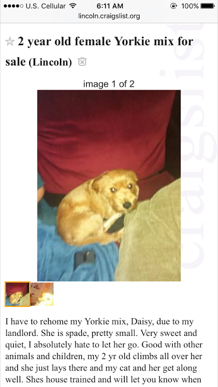
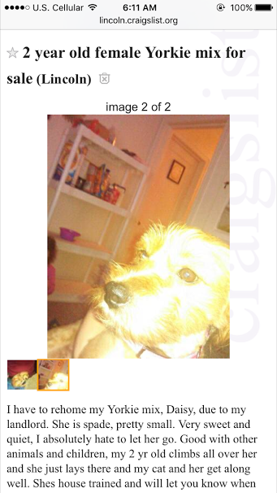
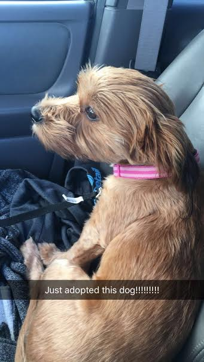
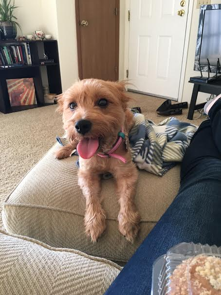
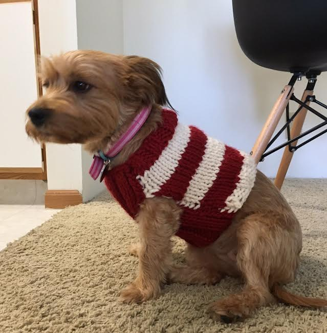

Anyone who knows me knows that I'm completely obsessed with dogs. What I was looking forward to most about graduating from college was being able to finally adopt a dog. Several times a week I would browse adoptable dogs online and read their descriptions. My family always had dogs growing up, and being in college without a dog was pretty ruff (ha ha).
After returning from Taiwan and starting work, I finally had the time and money to take care of a dog. I didn't want to get one immediately because I wanted to settle in to my new schedule. I visited a few dogs at the humane society but one of them felt like ~the one~. I preferred to adopt a dog from the humane society or a rescue organization, but I was also browsing Craigslist.
One day I saw an ad on Craigslist for a yorkie mix. The pictures weren't very clear but I texted the owner to see if I could stop by after work to meet the dog. I texted back and forth with the owner and she said that Daisy was house trained, good with kids, dogs, and cats, and was spayed. After work on my way to go meet her, I was reminding myself not to be impulsive and to make sure that this was the right dog for me. When I pulled up to the house, there were a few people sitting outside on their porch, so I figured they were waiting for me to go see their dog. I walked up to them and said hello, and they said, "Can I help you?" Turns out I had the wrong address. They helped me find where to go (right around the corner), and asked what I was going there for. I said, "Oh, just something on Craigslist."
 When I first saw Daisy, she came right up to me and stood up, leaning on my leg, looking up at me with the sweetest face ever! Right then I knew that I was going home with her. She looked completely different than the photos on Craigslist. I pet her a little bit and chatted with the owner about her. She said that Daisy originally came from a guy who took her from his grandma because the grandma has "way too many dogs", and this lady wasn't allowed to have dogs at her duplex, so she had to get rid of her right away. I paid the $150 she was asking and walked Daisy to my car. She jumped right in and sat on my passenger seat. I was SO happy and emotional that I finally had a dog so of course I cried a little bit in my car while she just sat there nervously looking at me. (To the people on the porch, this was a weird sight probably.)
The first few days with Daisy were super happy but also frustrating. Turns out, she isn't as house trained as I was led to believe. She cowered when she would have a house accident, but she would also cower when she went potty outside, too. She acted like I was going to hit her when I called her to me, or put on her leash, or walked towards her too fast. She didn't know how to play with toys, either.
Then it was time for our first vet appointment. I found out that she probably isn't spayed (there might be a scar, but it would be unusually long, and the vet couldn't feel if there was scar tissue there), she has whip worms, and worst of all, she is heart worm positive :( When I heard that she has heart worms I totally cried in the vet's office, but in the parking lot when I was leaving an old man winked at me, so I guess I have that. Later that week I found out that the heart worms are pretty mild and she has very little organ damage. We've started her on her 6 month treatment plan and she receives the immiticide injections in November, and will have to be on crate rest for 3-4 months after that.
I've now had Daisy for 1.5 months or so. She's learned to play with toys and she's already learned 5 tricks. She doesn't cower anymore and she hardly has any house accidents these days. Everywhere we go, people comment on how cute she is. I even knitted her a sweater. She's acting more and more loving towards me. Although we've still got a long road ahead of us with the heart worm treatment, I'm excited for life with my new dog!
Questions? Comments? Don't hesitate to contact me!